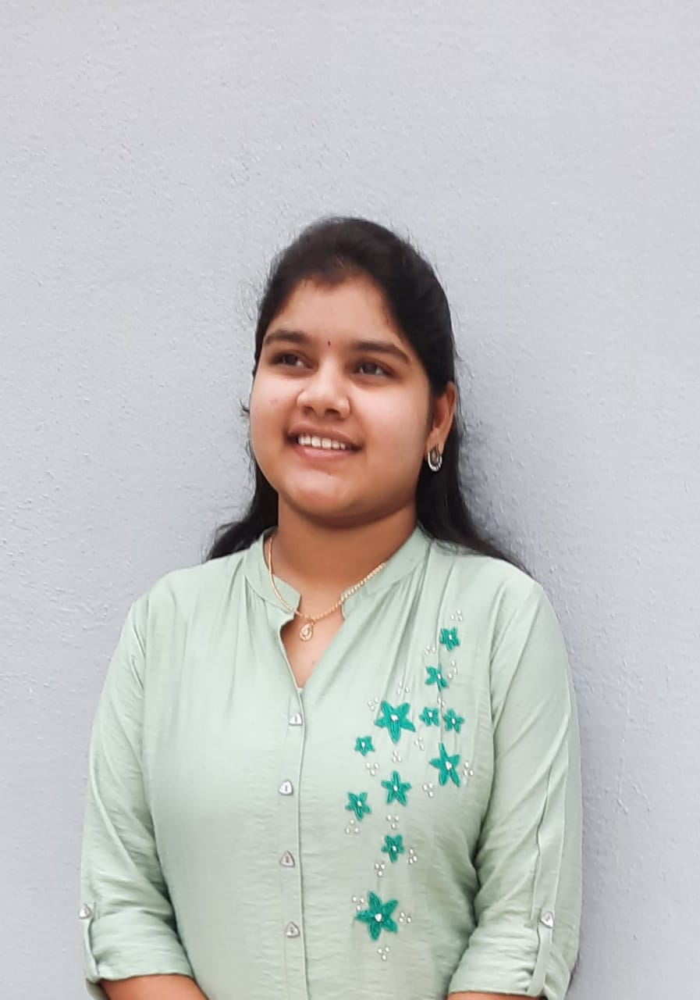

|  | Name:Ch.Yasaswini Student of Information Technology Reg.no:20B01A1230 Phone:8106610492 Email.id:yasaswinireddy2002@gmail.com Address:Pragadavaram,West Godavari District,Andhra Pradesh |
| About Me:
I am ch.yasaswini currently persuing 2nd year B.Tech in Shri Vishnu College For Women at Bhimavaram Career Objectives: |
| course | specialization | school/college | board/university | year of passing | percentage |
| B.tech | IT | Shri vishnu engineering college for women | JNTUK | 2020-2024 | 7.9 |
| Intermediate | M.P.C | Sri Chaitanya Junior College | Board of Intermediate | 2018-2020 | 9.4 |
| SSC | SSC | Bhasyam Public school | board of secondary education | 2017-2018 | 9.7 |